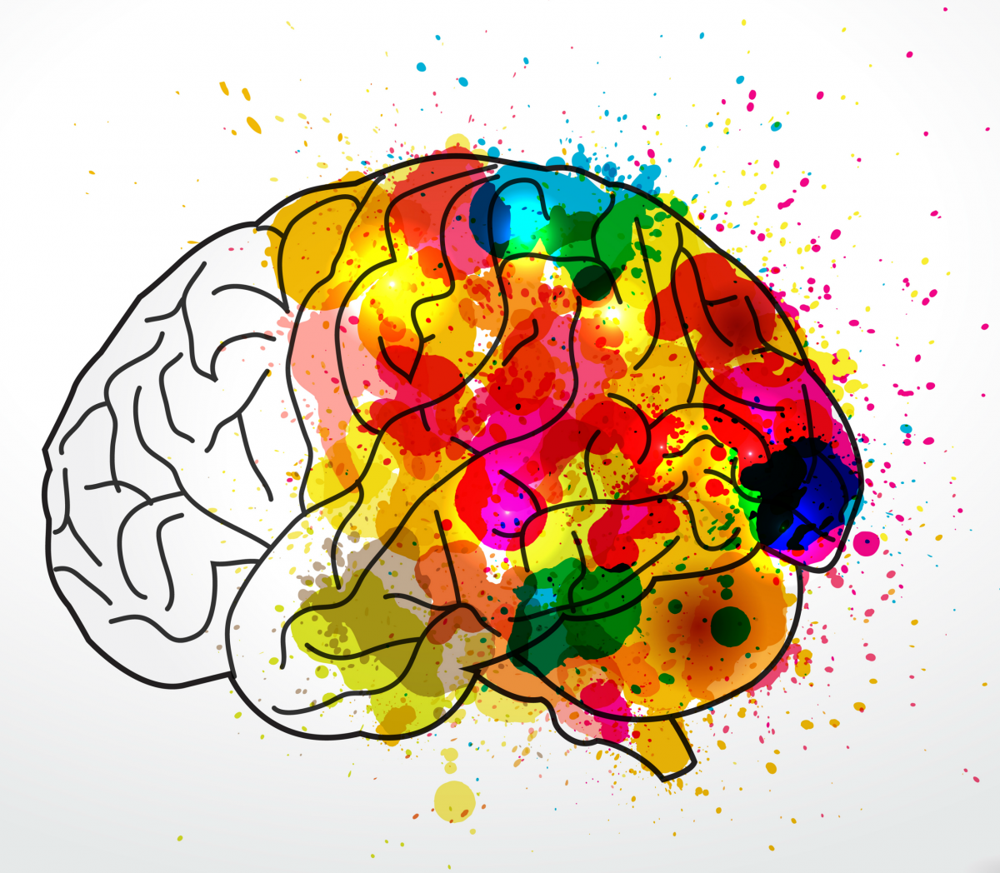

Creativiteit veronderstelt een flexibele houding die de mens in staat stelt om van oude manieren van denken los te komen, gewoontes te veranderen of ook om de dingen van alledag in een nieuw licht te kunnen zien. In het algemeen zijn een grote portie zelfvertrouwen en fantasie nodig om de eigen ideeën ook dan te verwezenlijken wanneer ze buiten de norm vallen en op weerstand stuiten. Onder creativiteit wordt het vermogen verstaan om iets nieuws, origineels, iets wat er niet eerder is geweest, te scheppen. Het kan daarbij om iets materieels of iets geestelijks gaan.
Is creativiteit belangrijk? In onze hoogtechnologische en zeer geregelde maatschappij wordt het steeds moeilijker om de eigen ideeën uit te leven en in praktijk te brengen. Aan de andere kant wordt dit steeds belangrijker omdat de concurrentieslag tussen personen en tussen ondernemingen zich met name op het gebied van innoverend vermogen afspeelt.  Routine – de vijand van creativiteit Wanneer men niet gestimuleerd wordt, verkommeren de creatieve vermogens en talenten. Dat leidt tot geestelijke leegte. Een dergelijke toestand komt van tijd tot tijd aan de oppervlakte. Het uit zich meestal in ontevredenheid, onverschilligheid, lichamelijke en geestelijke spanning of zelfs in het gevoel genoeg te hebben van het leven. Creativiteit is de uitdrukking van het bijzondere en unieke dat in ieder mens aanwezig is. Door op een creatieve manier in het leven te staan, kan men niet alleen zichzelf en anderen een plezier doen, maar voelt men zich ook veel beter. Men kan zijn persoonlijkheid en gevoelens tot uitdrukking brengen en bemerkt het evenwicht tussen lichaam, geest en ziel.